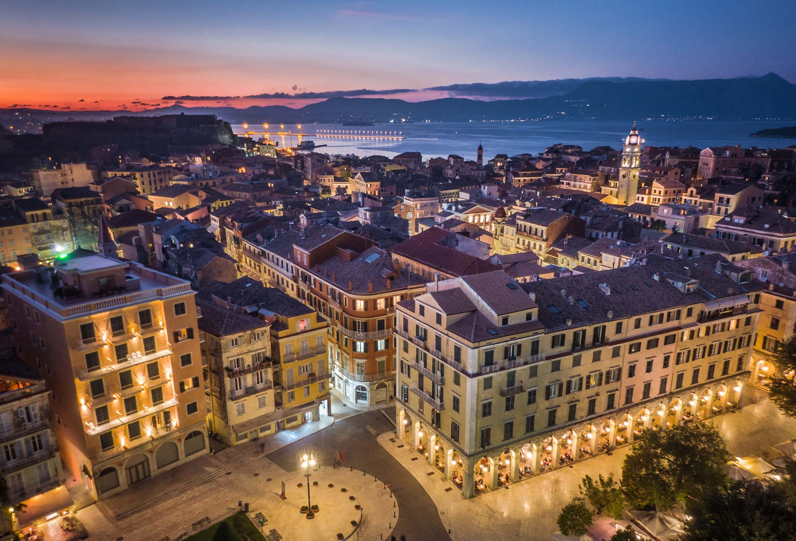
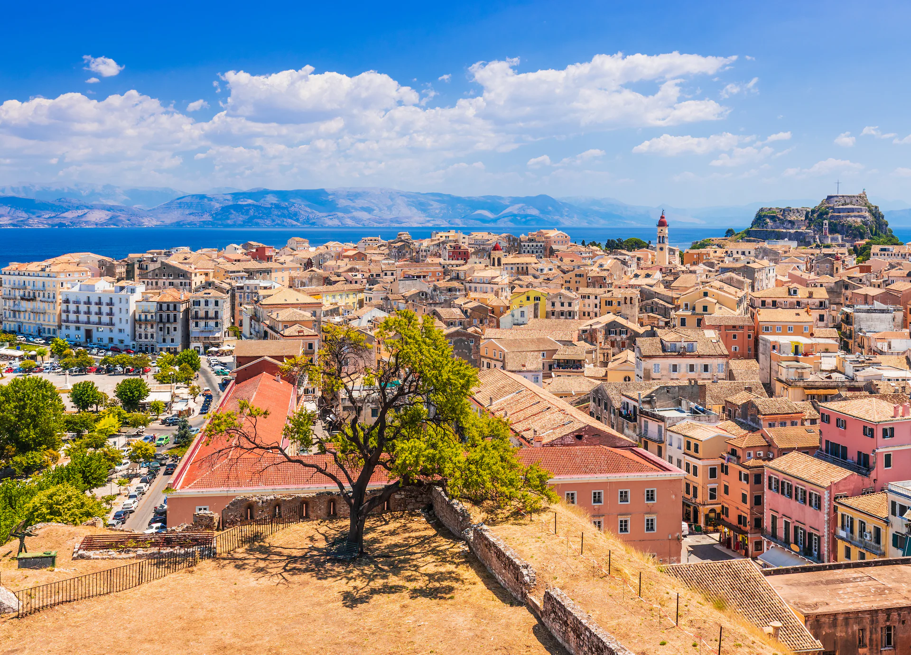
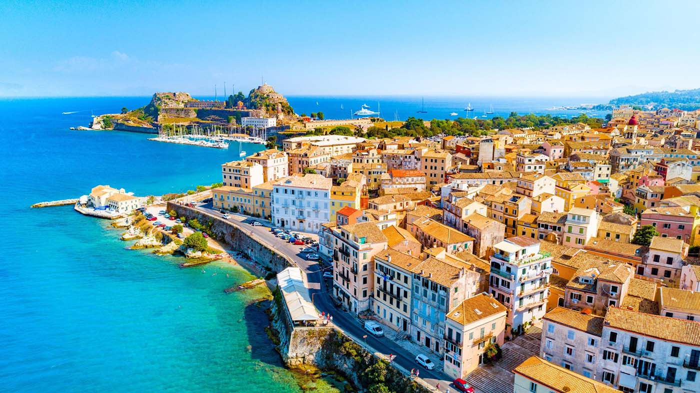
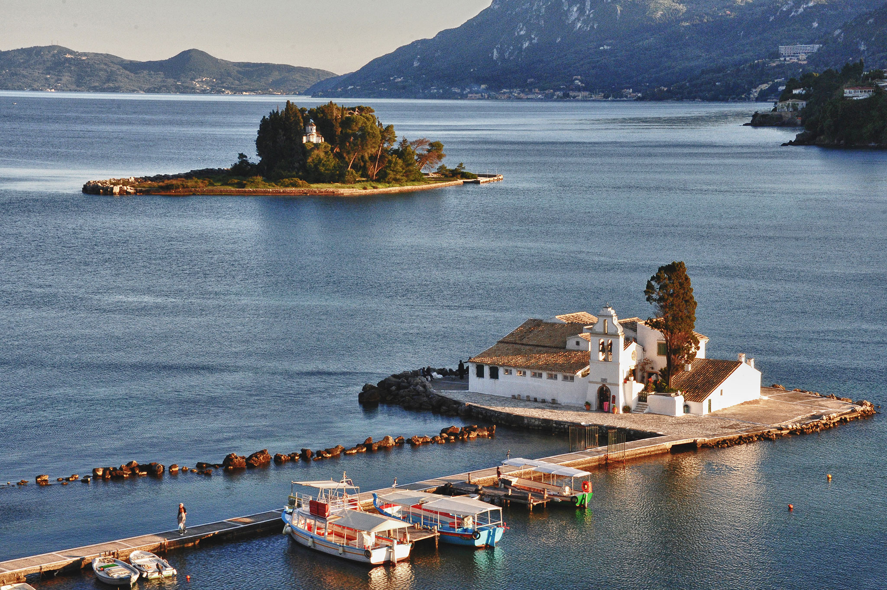
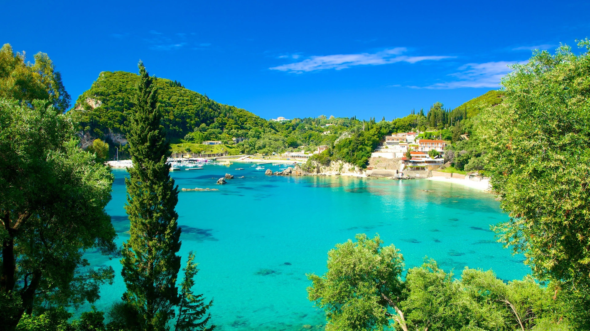
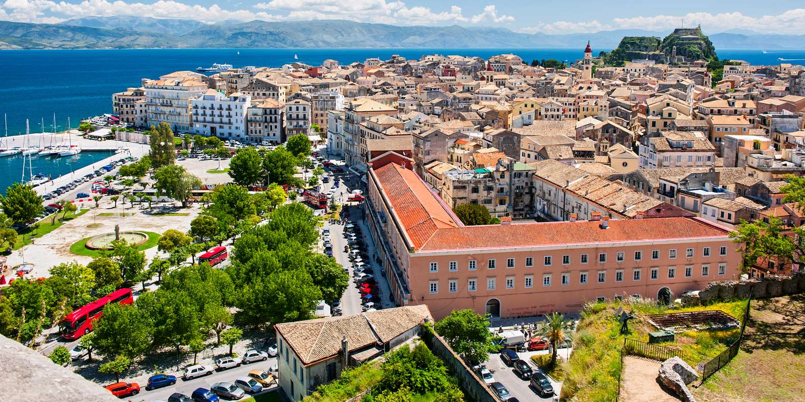
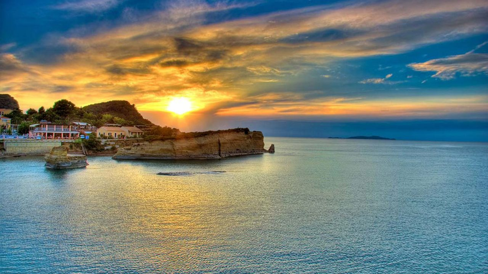
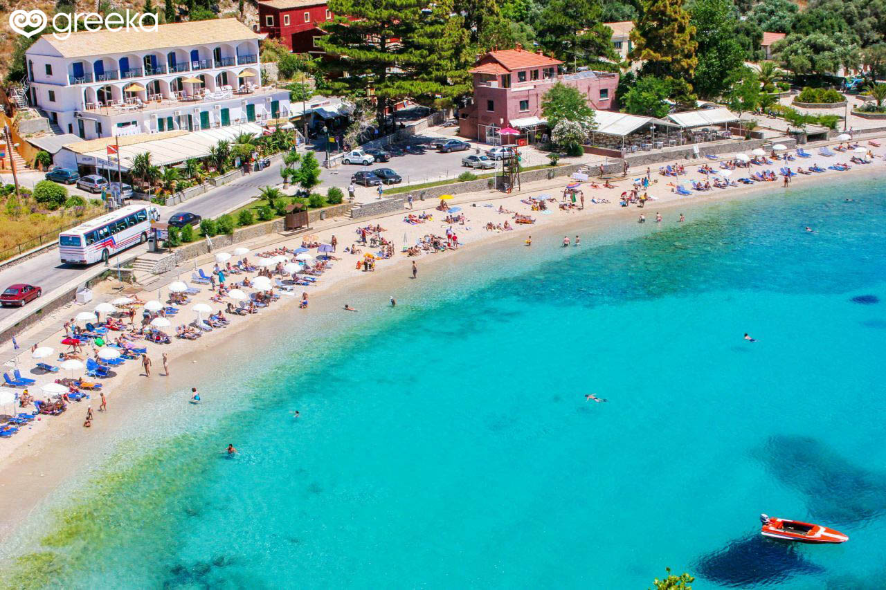
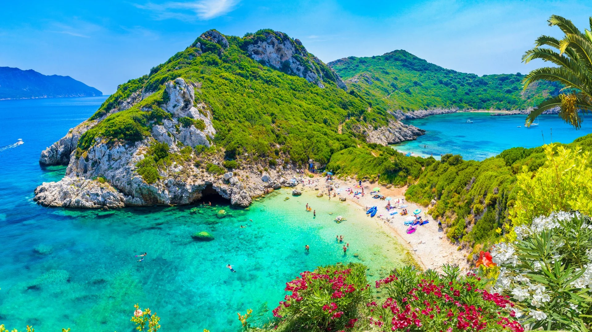

The Jewel of the Ionian
Corfu combines stunning landscapes, rich history, vibrant culture, and warm hospitality. Whether you're exploring ancient ruins, relaxing on pristine beaches, or enjoying lively nightlife, Corfu offers something for everyone.


A monument full of history.

The most photographed spot on the island.

Enchanting waters and monasteries.



